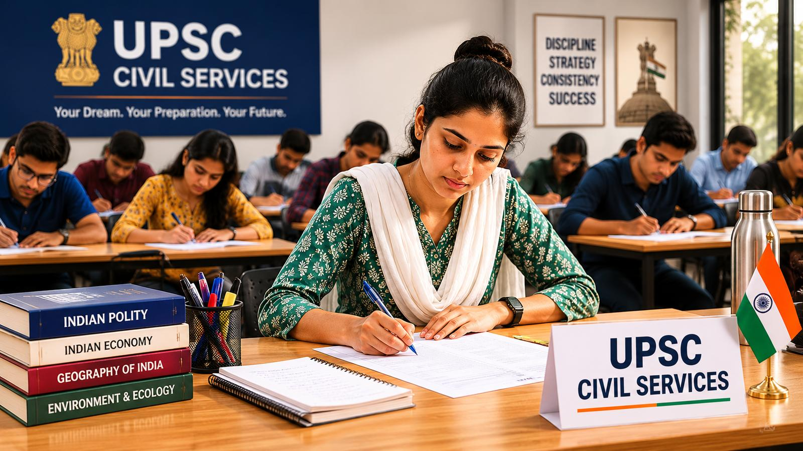
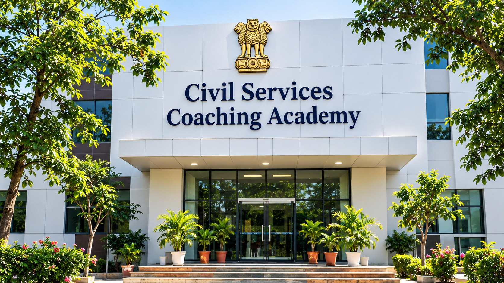
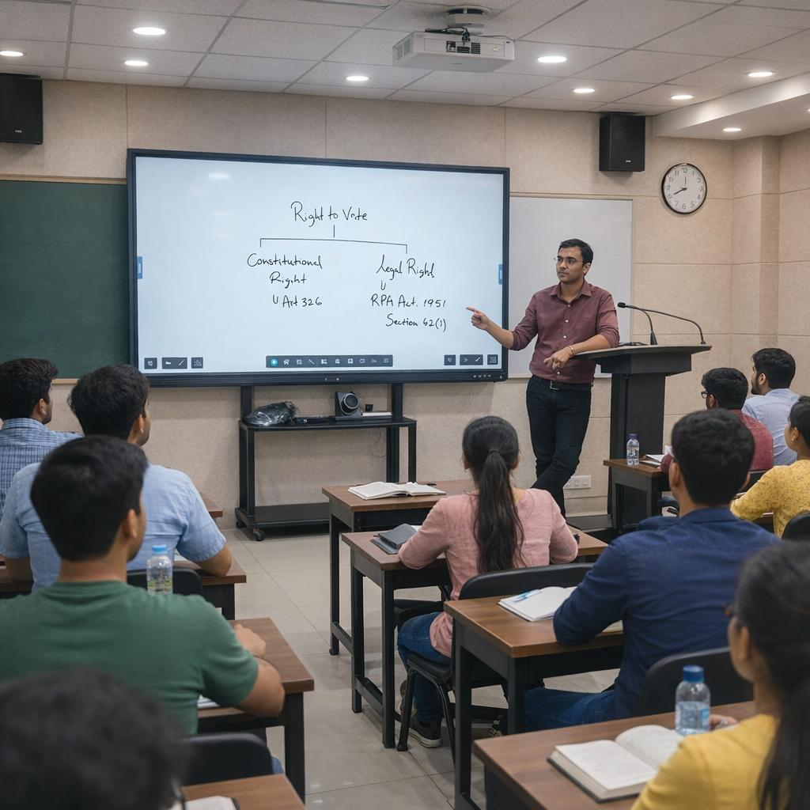
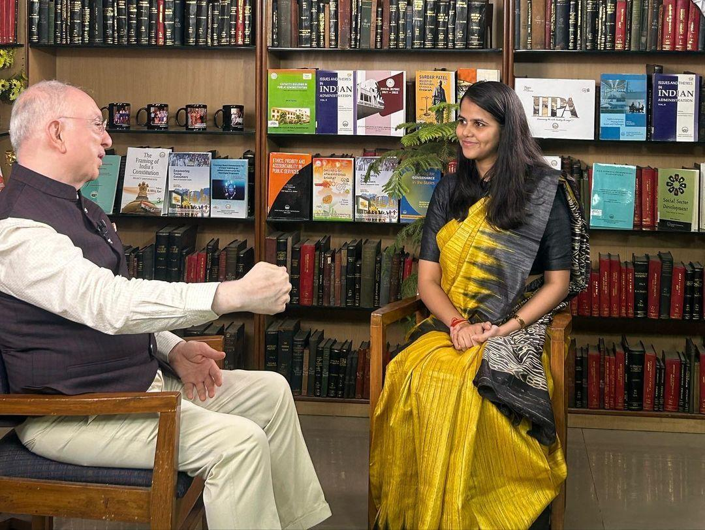
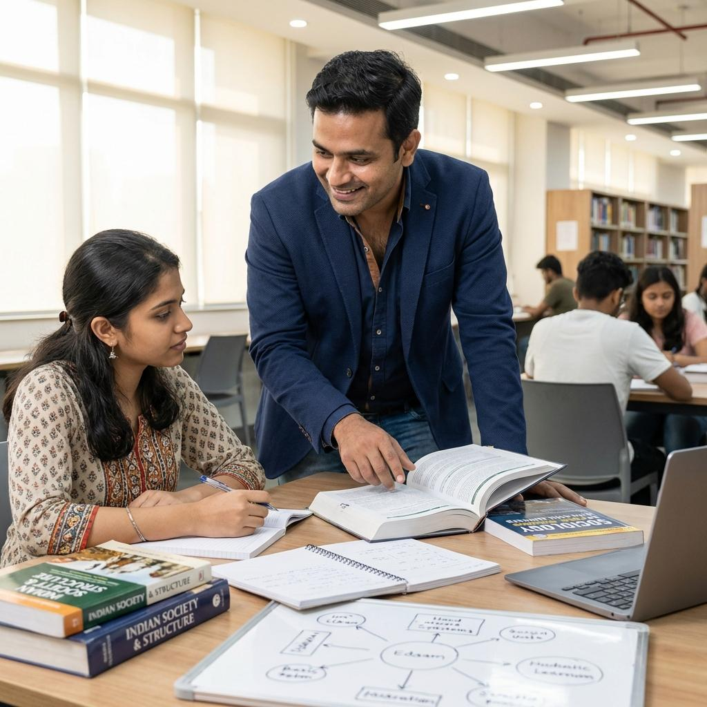
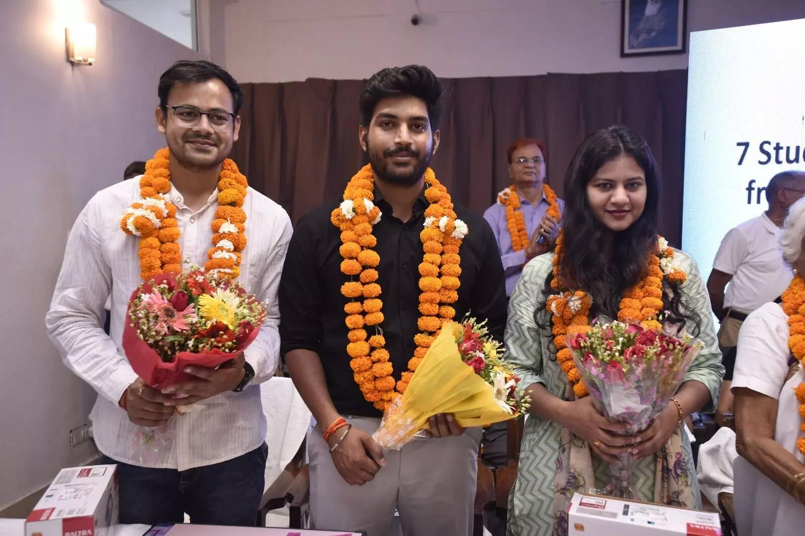
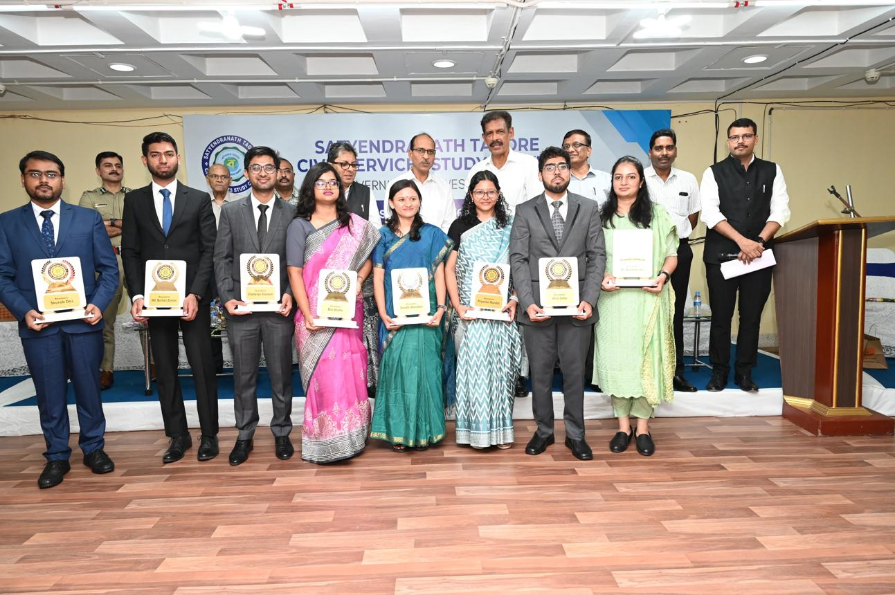
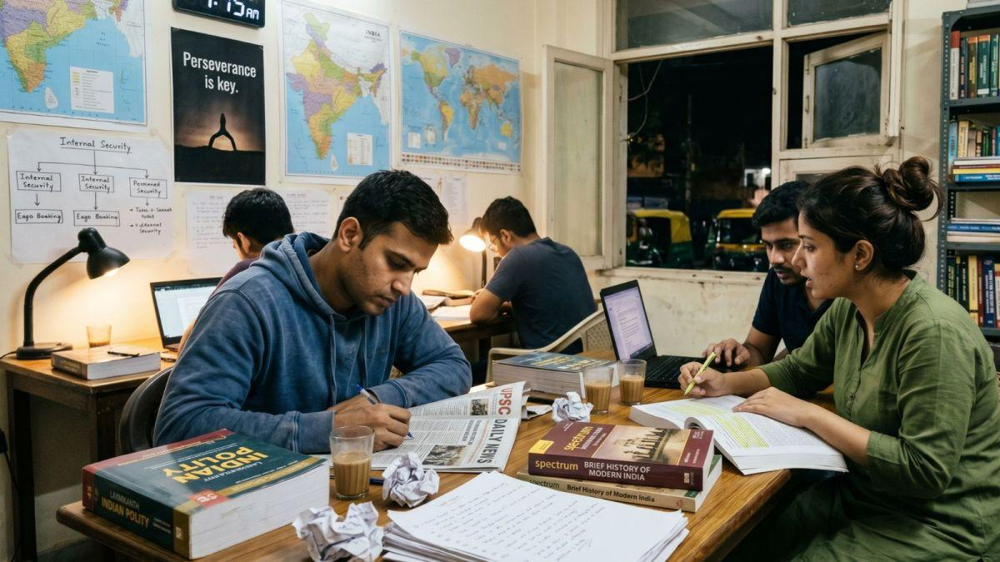

Academic Director • 14+ Yrs
Prof. Arvind Deshmukh
Indian Polity, Constitution & GS-II
“Constitutional literacy turns average answers into authoritative administrative arguments.”
View Profile
An institution built on intellectual rigour, disciplined daily answer writing, and direct mentorship from seasoned civil services educators.
Of structured prelims, mains & personality test mentorship in New Delhi & online across India.
Consistent pedagogy since 2015
Classroom & live digital cohorts
Across UPSC CSE cohorts
Subject scholars & mentors

Clearing the Civil Services Examination is not about memorizing volume—it is about cultivating clarity of thought, ethical judgment, and analytical precision under pressure.
Conceptual mastery before memorization—connecting static Polity, Economy, and History with dynamic governance issues.
Structured daily reading plans, timed answer-writing drills, and weekly diagnostic reviews keep preparation on track.
Small-cohort 1-on-1 mentorship ensures every aspirant receives line-by-line feedback on Mains copies and DAF strategy.

GS + CSAT intensive with 40+ simulated full-length & sectional tests.
Explore Prelims →
Daily 150/250-word answer evaluation, Ethics case studies & Essay labs.
Explore Mains →
DAF-specific board panels, recorded video reviews & administrative situational drills.
Explore Interview →Seamless 18-month Prelims-cum-Mains-cum-Interview architecture for college graduates and working professionals.
Read Syllabus Breakdown
Editorial analysis, PIB/Yojana briefs & All-India Ranking test simulations.
Join Test SeriesMicro-topic deconstruction & PYQ trend mapping.
Interactive lectures linking NCERTs to core texts.
Daily timed writing with line-by-line evaluation.
UPSC-calibrated Prelims & Mains simulations.
1-on-1 mentor review of accuracy & time pacing.
DAF profiling & mock board confidence drills.

12+ Yrs Experience • Ph.D. Public Policy. Specializes in GS-IV philosophical thinkers, administrative case studies, and high-scoring essays.
View Profile

15+ Yrs Experience • Leads Macroeconomics, Union Budget, Economic Survey & GS-III Infrastructure modules.
View ProfileDedicated aspirants who turned disciplined daily preparation into public service success.

Foundation + Mains Answer Writing Mentee • Year 2025
"Daily 20-minute answer reviews transformed how I structured GS-II and Ethics responses. My mentor's feedback kept me grounded through every mock cycle."

"Structured Prelims test analysis helped me raise my accuracy from 58% to 82%."

"Three mock boards gave me calm composure and balanced administrative perspective."
"The library environment and peer group kept my daily 9-hour study discipline intact."
Click any photograph to open lightbox view



Reflections from our Foundation, Test Series, and Interview cohorts.
Our faculty treat every aspirant with seriousness and dignity. Even in a 100-student hall, your answer sheet is read with individual care.

Speak with an academic counsellor to map your optional subject, Prelims-Mains timeline, and batch schedule.